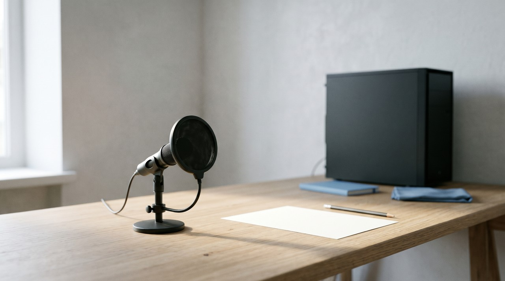
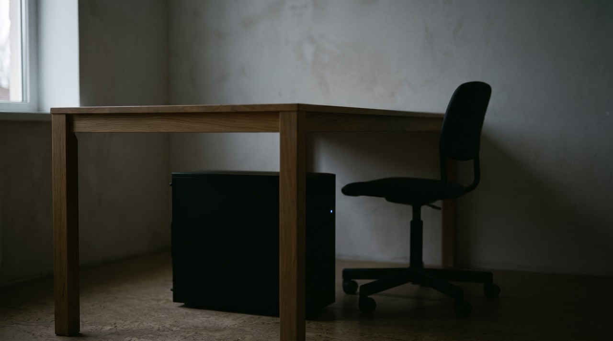

KVoiceWalk: can it clone your voice for Kokoro TTS? What it does, how long it takes, and how to run it on Windows
KVoiceWalk is a free Apache 2.0 tool that creates a new voice file for Kokoro TTS so it sounds close to a recording you give it. It does not train Kokoro. It adjusts the numbers inside a voice file bit by bit and keeps each change that scores closer to your clip. One run of 10,000 steps takes about 4 hours on an RTX 3060 and about 26 hours on a processor, and its README says the results are random.
| Kokoro on its own | Kokoro plus KVoiceWalk | GPT-SoVITS | VoiceClone | |
|---|---|---|---|---|
| Does it copy your voice? | No, it has 54 ready made voices | Close, after a slow search, with mixed results | Yes, a 5 second clip is enough, and 1 minute lets you fine tune | Yes, using 1 to 3 minutes of your own voice |
| What you give it | Nothing, you pick a voice name | 20 to 30 seconds of one speaker, plus the words spoken | A short clip, plus the words spoken | A recording made or uploaded in the app |
| Waiting time | None | Roughly 4 hours with an RTX 3060, or 26 hours with only a processor | A few seconds for a quick clone, more for fine tuning | A few minutes for an instant clone, more to train it |
| What you get | Speech in a stock voice | A small voice file that Kokoro can load | A cloned or fine tuned voice | A cloned and trained voice on your PC |
| Cost | Free, Apache 2.0 | Free, Apache 2.0 | Free, MIT | Free to clone and train one voice, then $49 once |
Written by Inam. VoiceClone, the Windows app in the last column, is mine and it runs on GPT-SoVITS, so I am not neutral about it. My other engineering notes are on designesh.com. Last updated 23 November 2026.
You probably picked up Kokoro because it is free, small and fast, and then you ran into the catch that it only speaks with its own ready made voices. When you start looking for a way to put your own voice into Kokoro, KVoiceWalk is the name that keeps showing up. Its GitHub page says it clones target voices, but it never really tells you in simple terms what you end up with or how long the whole thing takes.
KVoiceWalk can get a Kokoro voice fairly close to yours, but it is a slow search with random results, so try it for fun and do not build paid work around it. It never teaches Kokoro anything new. What it actually does is look for a voice that Kokoro can already produce and that happens to sound like your recording, and I will explain below why that difference matters.
What is KVoiceWalk, in plain words?
KVoiceWalk is a free community project built by a developer named RobViren and released under the Apache 2.0 licence. It sits on top of Kokoro, the small text to speech model I wrote about in can Kokoro clone your voice. When I looked at the repository on 23 November 2026, it had 298 stars, 39 forks and 8 open issues, with the last code update on 6 April 2026.
Before you look at how KVoiceWalk works, there is one thing about Kokoro you should know. Each Kokoro voice lives in a small file called a voice style tensor, which is just a list of numbers telling the model how that voice should sound. The model itself never changes from one voice to the next, so changing those numbers is all it takes to get a different voice out of the same Kokoro.
Those numbers are the exact thing KVoiceWalk works on. It shifts them slightly, has Kokoro speak with the updated numbers, compares that output against your recording, and keeps the change only when it sounds closer. People call this a random walk because each step is just a small random shift where only the helpful moves survive.
Does KVoiceWalk really clone your voice?
Not in the way a real voice cloner works, and this is usually where people get mixed up. A true cloner like GPT-SoVITS listens to your recording and actually learns from it. KVoiceWalk never touches Kokoro and does no training at all, because it is only searching through the voices Kokoro can already make to find the one closest to yours.
You can picture it like a police sketch artist who is only allowed to mix the faces already in his book and cannot draw a new one from scratch. Given enough tries, he can put together something that looks quite close to the person, but he can never add a feature that none of his existing faces have. So if your voice has something Kokoro's built in voices lack, like a strong accent or an unusual rhythm, the search simply cannot get there.
The numbers in the README give you a fair idea of how far this search can get. In the author's own example, the closest ready made Kokoro voice started at 71 percent similar to the target recording, and after 10,000 steps of walking, the new voice reached 93 percent. That is a real jump, but keep in mind that the number comes from a software checker, and fooling a checker is a different thing from fooling a friend who knows your voice.
What do you need before you run KVoiceWalk?
To run it, you need Python between version 3.10 and 3.12 along with a small tool called uv, which is just a faster way to install Python packages. If you want to use the graphical window, you also need tkinter, the part of Python that draws basic windows, and it usually comes bundled with Python on Windows. The README marks ffmpeg as optional, but you will want it on hand for getting your audio file ready.
You do not strictly need a graphics card, though having one changes how long you sit around waiting. The project was tested on an NVIDIA RTX 3060, where a run takes up about 4 GB of graphics memory. You do not have to install NVIDIA's CUDA toolkit on your own either, since the needed files come in with the Python packages, so your regular NVIDIA driver just needs to be recent.
Next, you need your audio recording. KVoiceWalk expects a single channel WAV file at 24000 Hz with about 20 to 30 seconds of one person talking. You also have to provide the exact words spoken in that clip, usually about two sentences long, though if you do not want to type them out yourself, the tool can transcribe them using Faster-Whisper, a speech recognizer that runs right on your PC.

How do you install and run KVoiceWalk on Windows?
Open the Windows Command Prompt and run these steps in order. Everything installs inside its own folder, so it will not mess with any other Python tools you already have on your computer.
- Install Python and Git if they are not on your PC yet, and then run
pip install uv. - Pull down the project with
git clone https://github.com/RobViren/kvoicewalk.gitand switch into that folder withcd kvoicewalk. - Create the environment with
uv venv --python 3.10, turn it on with.venv\Scripts\activate, and install everything withuv sync. This step downloads PyTorch, so give it time. - If you have an NVIDIA card, make sure Python can actually see it by running
uv run python -c "import torch; print(torch.cuda.is_available())", and check that it prints True. - Convert your recording with
ffmpeg -i input_file.wav -ac 1 -ar 24000 target.wav. Here-ac 1turns it into one channel, and-ar 24000sets the sample rate that Kokoro expects. - Launch the window with
uv run gui.py. Since April 2026 this has been the recommended way to run it, and it lets you queue up several runs and keep an eye on the log as they go.
If you prefer one command and no window, the README gives this shape: uv run main.py --target_text "the words in your clip" --target_audio target.wav --device cuda. The device setting accepts auto, cpu and cuda, and if you ask for cuda and no card is found, it quietly falls back to the processor.
How long does KVoiceWalk take?
The wait time is usually what catches people off guard. According to the README's own measurements, a full run takes about 26 hours on a processor and about 4 hours on an RTX 3060, which works out to about 6.5 times faster. Here a full run means 10,000 steps, since that is the default limit.
Even with a fast graphics card, this is not a five minute job. One open issue on the repository is from someone who watched the progress bar barely budge for several minutes and asked if that was normal, and it turned out the run was on the processor even though the PC had a good graphics card. If your run looks frozen, check first that it is really using the graphics card, because on the processor a full run is about a day.
There is also an optional first step called interpolate start. Before the main walk begins, it mixes pairs of the ready made voices and chooses the mixes closest to your recording as starting points. In the author's example, that step on its own pushed similarity from 71 percent to 78 percent, though the README warns that this stage takes a while as well.

What do the scores in the KVoiceWalk log mean?
Each line in the log prints three similarity numbers and one final score, and it helps to know what they mean so you can tell when to stop a run. Target similarity measures how close the new voice sounds to your recording using Resemblyzer, a small open source model built to compare two voices. That is the figure that climbed from 0.709 to 0.917 in the author's example.
Self similarity checks if the new voice still sounds like the same speaker when it reads a different sentence. Feature similarity looks at basic sound qualities of the audio so the voice does not break down into noise. As the author explains, without that third check the search used to find voices that passed the first two tests yet still sounded, in his words, like a metal basket of tools being thrown down stairs.
The final score combines all three numbers so a voice cannot score high by doing well on one check and failing the rest. In the example run, the last line shows a target similarity of 0.917, a self similarity of 0.971, a feature similarity of 0.54 and a score of 92.99. Once your own target similarity stops climbing for a long stretch, the walk has probably found as much as it is going to find.
How do you use the finished voice in Kokoro?
Whenever the walk lands on a better voice, it drops two files into a results folder inside the project's out folder. One is a small .pt file, which holds the voice itself, and the other is a WAV clip so you can play it back and hear how it sounds. Both file names include the step number and the score, which makes the best one easy to pick out.
To test a voice with new text, run uv run main.py --test_voice path\to\voice.pt --target_text "any sentence you like", and it writes the speech to a file called out.wav. To use it in your own Kokoro script, pass the path of the .pt file where you would normally write a voice name. I read Kokoro's pipeline code to confirm this: when the voice you give it ends in .pt, it loads that file from your disk and does not try to download a stock voice.
Some Kokoro apps want all voices packed in one file. For that there is an export option, uv run main.py --voices_folder ./voices --export_bin, which packs every .pt file in the folder into one voices.bin file.
What goes wrong with KVoiceWalk?
The first catch is that luck is built into how this works. Its README says the results are random: one run might stall for a long time and then suddenly turn out very good, while another fails right from the start. The author describes the project as a step that proves the idea, and he mentions a smarter search method as future work that has not been built yet.
The second catch is that a voice can match your sample clip without holding up on anything else. An open issue from December 2025 reports exactly that: the target phrase sounded right, yet the same voice did not hold up on other sentences even though the user gave it a 25 second clip as requested, and nobody had replied to it when I checked. Another user also mentioned that the generated voice talked faster than the recording and asked how to slow it down.
The third catch is Windows itself. An open issue from April 2026 reports that the tool hangs silently at startup on Windows 11 with Python 3.12 and shows no error on screen. The user who filed it worked around the first hang by setting a variable called BLIS_NUM_THREADS to 1 before starting, and got past a second hang by editing a line inside the installed Kokoro code. Because the README's own install command uses Python 3.10, that is the version I would stick to first.
I have not run a full walk on my own PC for this page, so everything here comes from the project's own files and its issue list, and I would rather tell you that plainly than pretend.
Should you use KVoiceWalk, or a real voice cloner?
KVoiceWalk makes sense if you already use Kokoro, you like trying things out, and you want extra voice choices without losing Kokoro's speed and small size. Getting close to a target voice is often plenty for a game character, a hobby project, or a reading voice you use yourself. On top of that, you keep the Apache 2.0 licence from start to finish, which allows commercial use.
If people need to recognise the voice as yours, go with a real cloner instead. That means using a model that actually learns from your recording, and the free one I know best is GPT-SoVITS, which I wrote a setup guide for in how to install GPT-SoVITS on Windows. If you want that same engine without dealing with the Python setup, that is why I built VoiceClone: it launches from a single file called START VoiceClone.bat, runs completely offline on Windows 10 and 11, and speaks English. You can clone and fully train one voice for free with 3 generations to test how it sounds, and the full licence is $49 once.
Whichever tool you go with, only clone your own voice or the voice of someone who has clearly agreed to it.
Use KVoiceWalk when you want a new Kokoro voice that sounds close to a target, and use a real cloner when the voice has to be yours.
FAQ
Is KVoiceWalk free?
Yes, it is free. The code is released under the Apache 2.0 licence, which is the same licence Kokoro uses and allows commercial use. There is no paid version and no official support, just the project's issue list on GitHub.
Does KVoiceWalk train or fine tune Kokoro?
No, Kokoro stays untouched. KVoiceWalk only tweaks the numbers inside a voice file bit by bit, keeping the changes that score closer to your recording.
How much audio does KVoiceWalk need?
It needs about 20 to 30 seconds of one person speaking, saved as a single channel WAV file at 24000 Hz. You also provide the words spoken in that clip, or you can let Faster-Whisper transcribe them for you.
Can KVoiceWalk run without a graphics card?
Yes, you can run it on a processor, though the README measures a full run at about 26 hours that way. On an RTX 3060, the same run takes about 4 hours and uses about 4 GB of graphics memory.
Sources: the KVoiceWalk README, its pyproject.toml settings file, its walk code and its open issues on GitHub, the pipeline code in the hexgrad kokoro library on GitHub, and the Resemblyzer page on GitHub. I read every one of them on 23 November 2026. GPT-SoVITS facts are from its README, and VoiceClone facts are from the product page on myvoiceclones.com.
Hear your own voice come back.
The free Windows app clones and fully trains one voice, yours, on your own PC. No account, no upload, and the download starts right away.